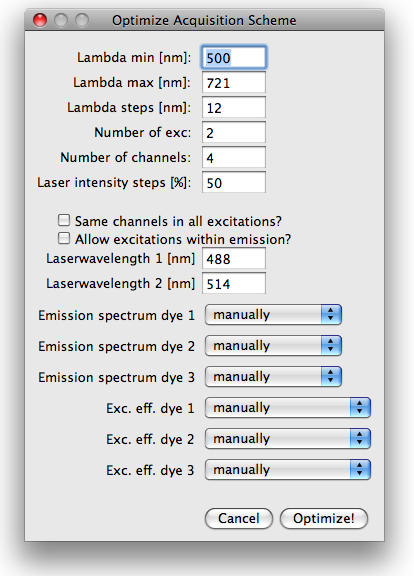
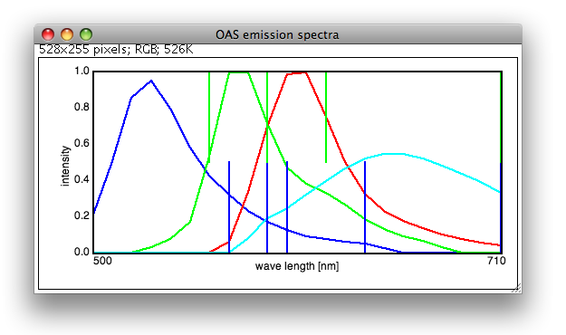
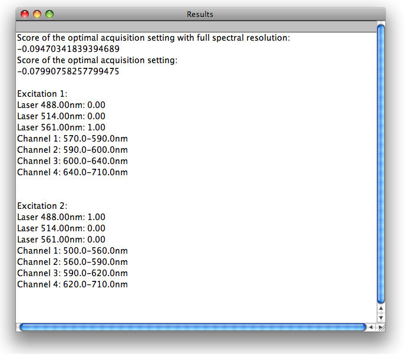

ImageJ plug-ins to optimize imaging parameters for fluorescence microscopy
To obtain the label concentration of spectrally overlapping labels, the
imaging data has to be "unmixed" by offline computation
(Dickinson et al., 2001). The accuracy of this linear unmixing
depends critically on the degree of spectral overlap between the dyes, and on the
choice of the spectral channels used to detect the emission. Here, we present a
plug-in for the image analysis software ImageJ that determines the optimal choice
of spectral channels and the optimal excitations for a given set of dyes. The plug-in
follows closely the procedure presented in Neher and Neher, 2004.
Briefly, the plug-in first determines the optimal excitation settings assuming the emission
is detected at full spectral resolution. Excitations are optimized by looping
over all possible mixtures of excitation wavelength such that the total laser
power adds up to 100%. After the best combinations of excitation wavelengths
are determined, the plug-in loops over all possible choices of emission windows.
Different configurations are compared via the sum of squared standard deviations
of the label concentrations.
Copy the 'OptimizeAcquistionScheme_.jar' into the plug-in folder of your ImageJ
distribution: OptimzizeAcquisitionScheme_.jar version 0.5.1
Localize the plug-in the ImageJ plug-ins menu and run it. You will be asked to enter the
number of dyes in the sample and the number of laser wavelength available. After clicking
'Ok', a new dialog will open where more specific information about the sample and the
set-up has to be entered:
The first three fields specify the range of the emission and the resolution, at which the
different channels are sampled, i.e. what is the step size used for the channels boundaries
during the optimization. Beware, the run-time of the plugin increases dramatically with smaller
step sizes! The next two fields are used to specify the number of excitations the user wants
to do and the number of channels that can be measured in each of the excitations.
Next, the user has to specify whether the same emission channels are to be used in all excitations
or whether the channels should be optimized for each excitation separately. Note that
using the same channels for all excitation is much faster and optimizing channels for more
than 2 excitations can easily result in excessively long run-times, in particular when the
number of steps (lambda range over stepsize) is large (>20). The other checkbox is used to
specify whether the detection should be forced to start at longer wavelength than the
longest excitation wavelength in a specific excitation.
The remaining fields are used to specify the available laser wave length and select the emission
and excitation spectra from the spectral library. The can also be entered manually.

Results
The optimal excitations and emission channels are printed into a separate window. The emission
channels are also indicated in the plot showing the emission spectra. Below is shown an
example for the dyes A488, Cy3, MitoRed and FM464. The parameters are optimized for 2 excitations,
having the laser wavelength 488, 514 and 561nm available.
The optimal solution turns out to be one excitation at 488nm and one at 561nm, leaving the
514nm laser unused. Note that knowledge of the excitation spectra is necessary.


[1] Dickinson, ME, Bearman, G, Tille, S, Lansford, R, and Fraser, SE.
Multi-spectral imaging and linear unmixing add a whole new dimension to laser scanning
fluorescence microscopy, BioTechniques, vol. 31 (6) pp. 1272, 2001
[2] Neher, R, and Neher, E. Optimizing imaging parameters for the separation of
multiple labels in a fluorescence image, Journal of microscopy, vol. 213 (Pt 1) pp. 46-62, 2004